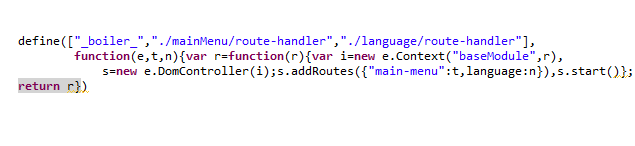

It is NOT a website building tool OR a utility library solving just MVC. BoilerplateJS is your startup code to kickstart next large-scale javascript product. Just that we did some basic coding and library integrations to make your life easy!
-
- How should I organize my solution structure?
-

Large scale javascript development involves many differnt file types such as javascript, css, html, bat, sh, etc. Some of these are your product code and others may be for unit tests or build scripts.
Solution structure complexity may not stop there. In your product code, you need to manage your third-party libraries, reusable classes (just functions in javacripts), differnt product sub-modules, plugins, templates, etc. too.
After being a part of several large scale products BoilerplateJS proposes you a robust structure to manage all your solution files effectivly.
-
-
- Can I do modular object oriented programming with plain javascript?
-

Being a dynamic multi-paradigm language, javascript has its best use when its functional power is blended with some essence of object orientation.
Gone are the days we coded JS in to a single massive script file. BoilerplateJS modularizes the code in to logical parts that are compliant with asynchronous module definition API (AMD API) allowing unit encapsulation and dependency management.
BoilerplateJS "example code" demonstrates best practices for familiar OO programming that allow creation of classes containing static, public and private spaces (see the picture - you may play with unit tests too).
In contrast, BoilerplateJS "core classes" have deviated from the above pattern, but follow a prototype-based approach for optimum performance.
-
-
- My product suite has multiple product modules, how should I go about it?
-
 Building software products is different from building a web-application or a website. Products
are commonly a part of a larger product suite (family of products). Each product module may contain
sub modules for its different functional areas. Likewise depending on the complexity
of the product suite, multiple levels of sub-modularization is not uncommon.
Building software products is different from building a web-application or a website. Products
are commonly a part of a larger product suite (family of products). Each product module may contain
sub modules for its different functional areas. Likewise depending on the complexity
of the product suite, multiple levels of sub-modularization is not uncommon.
'Boiler.Context' is one of the most important classes in BoilerplateJS. A 'Context' represents an isolated and controlled environment for a module (or a sub-module) in the product suite. Each context is sandbox protected (e.g from failures in another context), but also with the ability to interact with other contexts in a controlled manner.
Contexts can be associated (nested) in a way to create a parent-child association to form a context tree. This is the most common topology for a product suite where a global context becomes the parent context where product modules own independent child contexts. Associated contexts will posses limited knowledge of each other, for example for inheriting configuration settings from the parent.
-
-
- UI layer is going to be complex in my product. How should I design my UI components?
-
 BoilerplateJS keeps view layer very much open for the developers to mix
and match different UI libraries as required. By default it ships with
knockoutJS and jQuery, that are sufficient for simple UI needs.
BoilerplateJS keeps view layer very much open for the developers to mix
and match different UI libraries as required. By default it ships with
knockoutJS and jQuery, that are sufficient for simple UI needs.
One important class in Boilerplate is 'Boiler.UIPanel'. This class assist developers to deal with 'V' (of MVX architecture) related aspects such as template attachment to DOM, CSS attachment to DOM, localization, etc. VX layers of MVX architecture is open for developers to select between any MVC, MVVM, MVP framework.
Following is a typical structure of a see contained UI component:
- nls (folder) : localization resources for the UI component
- style.css : CSS stylesheet for UI component specific styling
- view.html : V of your MV(X) component (an html template)
- viewmodel.js : code behind incase you use MVVM
- component.js : the file that encapsulate all above files
- route-handler.js : code that manage lifecycle of the component
-
-
- How should my loosely coupled modules interact with each other?
-

Architecture of BoilerplateJS suggests every UI component to be self contained and loosely coupled. But what if one component require interactions with another? Rather than being tightly coupled, we recommend event based pub-sub mechanism for such communication needs. 'Boiler.Context' class exposes pair of mediating methods listen & notify that enables components to interact.
All contexts instances in the same context hierachy, share a single mediator. This means UI components in a particular context hierachy are able to communicate, although they are not a part of the same context.
-
-
- I'm building a single page app. What about bookmarking and browser history?
- It is a very common requirement that specific business information and functionality be directly accessible via bookmarked URLs. It might not be trivial to add bookmarking and history support later, unless planed by the initial architecture. In addition, it is important that the browser 'back/forward' buttons behaving natural to your users.
-
- I'm writing durable product code. Can I UnitTest my javascript code?
- Test driven development encourages you to write less coupled, cohesive code that is easy to change. BoilerplateJS comes with an ready to use integrated UnitTesting facilities. All core classes in the platform are fully covered with unit tests. Under existing unit tests, you will find best practices of mock, stub, assert, etc. which you may adapt in covering your own code.
-
- How should I provide native language support for my users?
- In javascript based single page applications, UI rendering completely happens on the browser. Therefore the localization of UI components should also happen on the browser. BoilerplateJS let's you define localization resources per UI component, enabling you to structure and manage resource files effectively. It is even possible to change the css styles, images, etc. according to the language preferences of user's browser.
-
- How can I maintain a documentation for my product?
-

Having documentation for your product adds maintainability and makes debugging processes easier. But when the source is modified with the changing requirements developers have to put an extra effort on maintaining the documentation
BoilerplateJS ships YUIDoc as a 3rd party tool for document generation using the comments in the source
All you have to do is to comment the source code using few annotations. Then run the batch file document.bat (On linux run ‘document.sh’) under the documentation directory. This will generate the documentation as a html web page which is ready to publish
-
-
- How can I optimize my code ready for deployment?
-
Javascript can make your application dynamic and active however large number
of files and file sizes being downloaded into the browser can lead to pages
becoming unresponsive. To avoid this from taking place BoilerplateJS provides
the RequireJS optimizer as a tool in the framework which will combine related
scripts and minify the javascript code to provide better performance. After
optimization only a single file will be loaded as the application and all
the files will be compressed.
After optimization your code will look like this;

-
Javascript can make your application dynamic and active however large number
of files and file sizes being downloaded into the browser can lead to pages
becoming unresponsive. To avoid this from taking place BoilerplateJS provides
the RequireJS optimizer as a tool in the framework which will combine related
scripts and minify the javascript code to provide better performance. After
optimization only a single file will be loaded as the application and all
the files will be compressed.